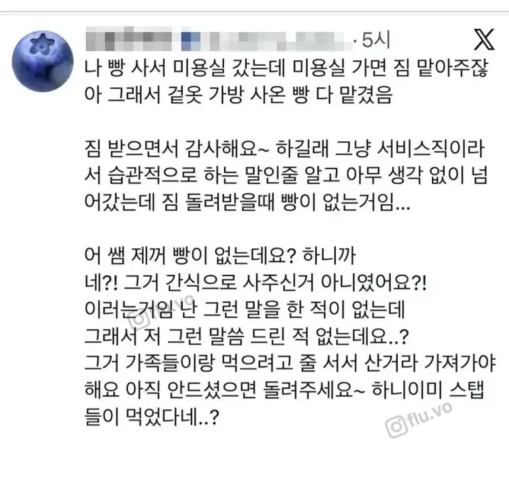
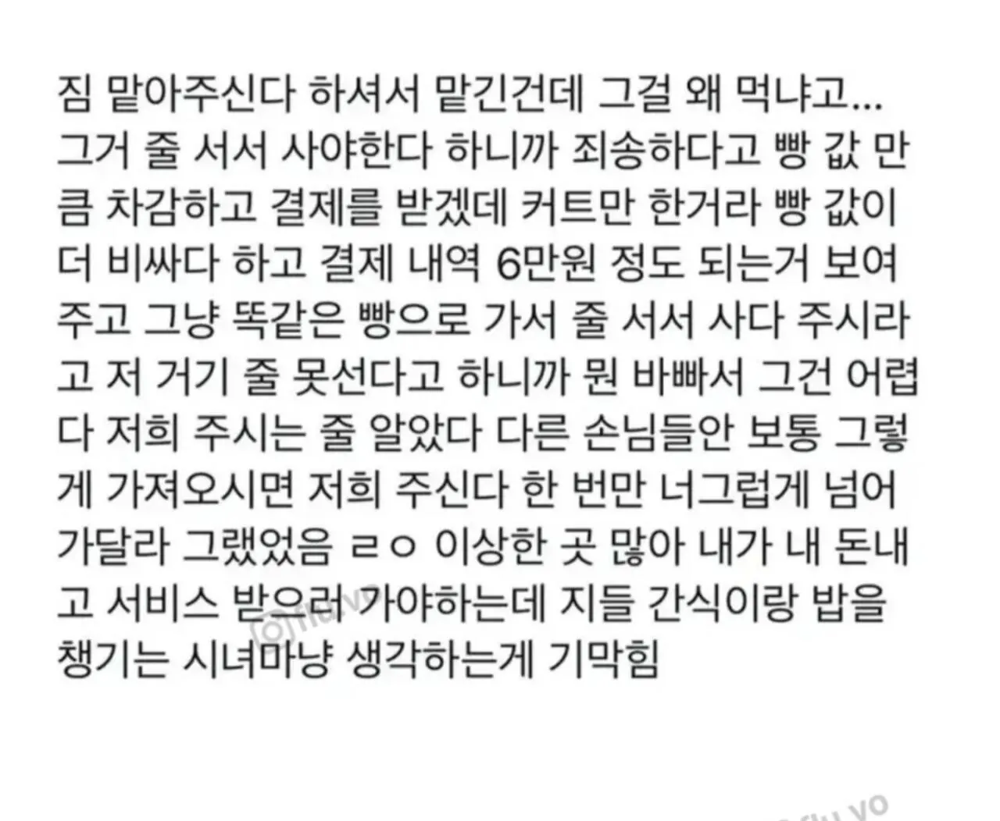

필라테스나 수영장에서도 강사들 간식 챙겨주던데...
그런 자발적 시녀는 대체 왜 하는거여 ㅋㅋ


필라테스나 수영장에서도 강사들 간식 챙겨주던데...
그런 자발적 시녀는 대체 왜 하는거여 ㅋㅋ
저게 보통 오래 자주 다니는 애들이 라포형성되서 친분 높이려고 하는 짓이고 그거때문에 일반 손님이 피해봄 나는 시발 3달에 한번 가는 사람인데도 바라더라고 어쩌라고임;
너그럽게 넘어가주시라ㅋㅋㅋㅋ
너그럽게 넘어가주는건 내맘인데
왜 지들이 정하고 있어
남자버전으로 차사고나고 별로 티도 안나네!! 가 있긴한던
최근에 별티안 당해서 정의구현함 ㅋㅋㅋ
병신년들 저거 자기도 주기 싫은데 관례랍시고 사들고가더라
그냥 거길 안가면되잖아 ㅋㅋ
이게 호의자체를 욕할필요는 없는데 이것들이 받아먹다보니 ㄹㅇ 눈이돌아갔나 싶네 ㅋㅋㅋㅋㅋㅋㅋ
저건 좀 기괴하긴 하더라. 남자들끼리는 전혀 보이지 않는 관습이야 저건.
병신짓도 저런 상병신짓이 없다
퓽신같은년들 ㅉㅉ
뭐 저런 분위기가 생겨난 저쪽만의 이유가 있겠지
우리엄마도 친분있는 사람들에겐 음식생기면 항상 나눠주고 어디갈때 나눠먹고 하는게 자연스러워서 단골이라 어느정도 친분 생기면 그럴수도 있겠다고 생각함
저긴 강요하는 느낌이 들어서 좀 그렇긴 하다만
내가 손님인데 선물을왜갖다바침